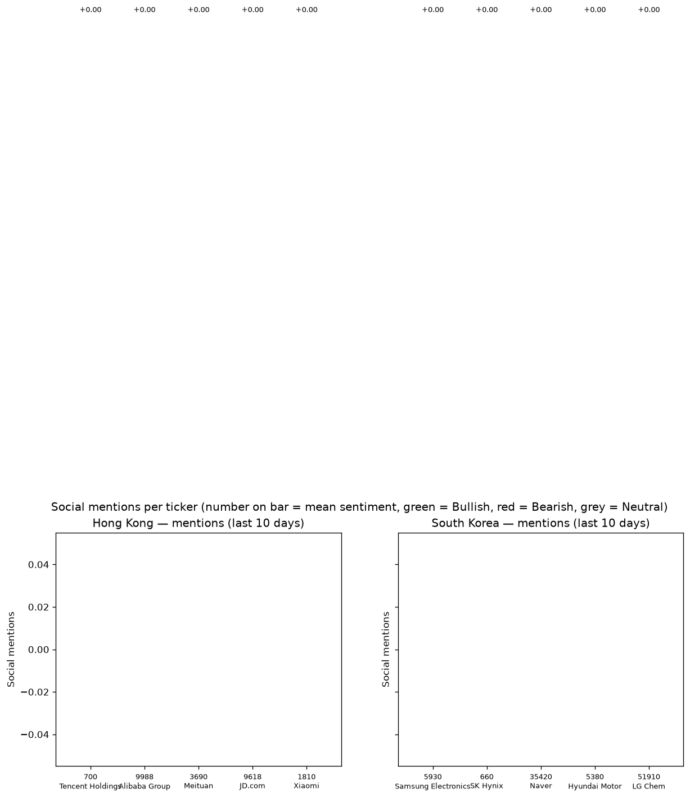
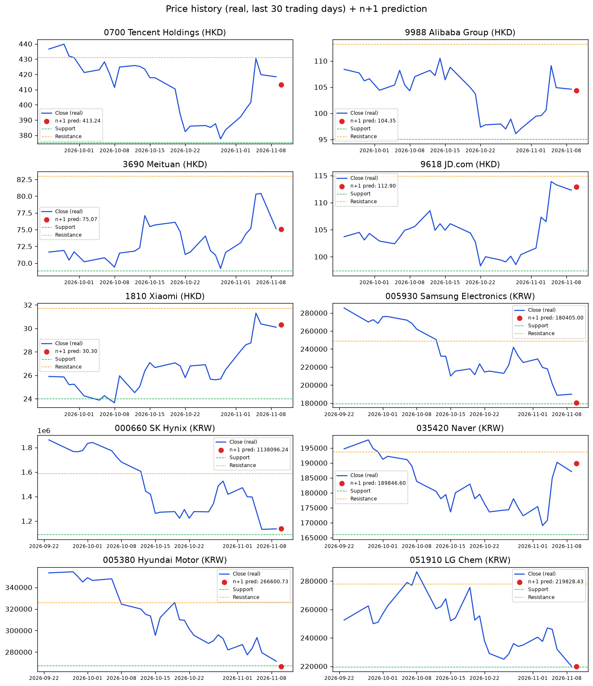

TZURONI / CrowdWisdomTrading intern assessment · Run: 2026-11-10 08:26 UTC · Models compared: Ridge / RandomForest / GradientBoosting (scikit-learn), best per ticker by test directional accuracy · Sentiment: VADER + small finance word list (FinBERT not used — see below) · Prices: Yahoo Finance (real, 1 year)
| # | Ticker | Mentions | Sentiment | Direction | Current price | Predicted n+1 | Support / Resistance | Test dir. acc. |
|---|---|---|---|---|---|---|---|---|
| 1 | 9618 JD.com | 86 | +0.04 | Neutral | 112.30 HKD | 112.90 (+0.53%) | 97.40 / 114.90 | 57% |
| 2 | 9988 Alibaba Group | 83 | +0.05 | Neutral | 104.60 HKD | 104.35 (-0.24%) | 95.10 / 113.20 | 57% |
| 3 | 0700 Tencent Holdings | 32 | +0.21 | Bullish | 418.40 HKD | 413.24 (-1.23%) | 375.20 / 431.20 | 61% |
| 4 | 3690 Meituan | 30 | +0.03 | Neutral | 75.15 HKD | 75.07 (-0.11%) | 68.85 / 83.00 | 55% |
| 5 | 1810 Xiaomi | 27 | +0.17 | Bullish | 30.10 HKD | 30.30 (+0.67%) | 24.00 / 31.74 | 52% |
| # | Ticker | Mentions | Sentiment | Direction | Current price | Predicted n+1 | Support / Resistance | Test dir. acc. |
|---|---|---|---|---|---|---|---|---|
| 1 | 005930 Samsung Electronics | 28 | +0.12 | Bullish | 189900.00 KRW | 180405.00 (-5.00%) | 179200.00 / 249000.00 | 44% |
| 2 | 035420 Naver | 11 | +0.33 | Bullish | 187100.00 KRW | 189846.60 (+1.47%) | 166000.00 / 193700.00 | 59% |
| 3 | 005380 Hyundai Motor | 7 | +0.25 | Bullish | 271500.00 KRW | 266600.73 (-1.80%) | 267500.00 / 326000.00 | 56% |
| 4 | 051910 LG Chem | 2 | +0.05 | Bullish | 220000.00 KRW | 219828.43 (-0.08%) | 219500.00 / 278000.00 | 53% |
| 5 | 000660 SK Hynix | 0 | +0.00 | Neutral | 1136000.00 KRW | 1138096.24 (+0.18%) | 1089000.00 / 1587000.00 | 50% |


Current: 418.40 HKD · Predicted n+1: 413.24 (-1.23%) · Direction: Bullish
Support 375.20 · Resistance 431.20 · Mentions (10d): 32 · Mean sentiment: +0.21 · News sentiment: +0.17
Best model: Ridge · Test (last 30% of days): MAE 0.0148 · RMSE 0.0198 · Directional accuracy 61% (69 test days)
All models, test directional accuracy: Ridge 61% · RandomForest 55% · GradientBoosting 54% · baseline (yesterday repeats) 55%
Current: 104.60 HKD · Predicted n+1: 104.35 (-0.24%) · Direction: Neutral
Support 95.10 · Resistance 113.20 · Mentions (10d): 83 · Mean sentiment: +0.05 · News sentiment: +0.07
Best model: Ridge · Test (last 30% of days): MAE 0.0199 · RMSE 0.0266 · Directional accuracy 57% (69 test days)
All models, test directional accuracy: Ridge 57% · RandomForest 54% · GradientBoosting 51% · baseline (yesterday repeats) 43%
Current: 75.15 HKD · Predicted n+1: 75.07 (-0.11%) · Direction: Neutral
Support 68.85 · Resistance 83.00 · Mentions (10d): 30 · Mean sentiment: +0.03 · News sentiment: -0.03
Best model: RandomForest · Test (last 30% of days): MAE 0.0184 · RMSE 0.0250 · Directional accuracy 55% (69 test days)
All models, test directional accuracy: Ridge 41% · RandomForest 55% · GradientBoosting 48% · baseline (yesterday repeats) 42%
Current: 112.30 HKD · Predicted n+1: 112.90 (+0.53%) · Direction: Neutral
Support 97.40 · Resistance 114.90 · Mentions (10d): 86 · Mean sentiment: +0.04 · News sentiment: +0.34
Best model: RandomForest · Test (last 30% of days): MAE 0.0150 · RMSE 0.0219 · Directional accuracy 57% (69 test days)
All models, test directional accuracy: Ridge 54% · RandomForest 57% · GradientBoosting 55% · baseline (yesterday repeats) 35%
Current: 30.10 HKD · Predicted n+1: 30.30 (+0.67%) · Direction: Bullish
Support 24.00 · Resistance 31.74 · Mentions (10d): 27 · Mean sentiment: +0.17 · News sentiment: +0.06
Best model: Ridge · Test (last 30% of days): MAE 0.0230 · RMSE 0.0302 · Directional accuracy 52% (69 test days)
All models, test directional accuracy: Ridge 52% · RandomForest 48% · GradientBoosting 46% · baseline (yesterday repeats) 51%
Current: 189900.00 KRW · Predicted n+1: 180405.00 (-5.00%) · Direction: Bullish
Support 179200.00 · Resistance 249000.00 · Mentions (10d): 28 · Mean sentiment: +0.12 · News sentiment: +0.10
Best model: Ridge · Test (last 30% of days): MAE 0.0398 · RMSE 0.0555 · Directional accuracy 44% (68 test days)
All models, test directional accuracy: Ridge 44% · RandomForest 40% · GradientBoosting 38% · baseline (yesterday repeats) 40%
Current: 1136000.00 KRW · Predicted n+1: 1138096.24 (+0.18%) · Direction: Neutral
Support 1089000.00 · Resistance 1587000.00 · Mentions (10d): 0 · Mean sentiment: +0.00 · News sentiment: +0.01
Best model: Ridge · Test (last 30% of days): MAE 0.0599 · RMSE 0.0772 · Directional accuracy 50% (68 test days)
All models, test directional accuracy: Ridge 50% · RandomForest 47% · GradientBoosting 47% · baseline (yesterday repeats) 51%
Current: 187100.00 KRW · Predicted n+1: 189846.60 (+1.47%) · Direction: Bullish
Support 166000.00 · Resistance 193700.00 · Mentions (10d): 11 · Mean sentiment: +0.33 · News sentiment: +0.08
Best model: GradientBoosting · Test (last 30% of days): MAE 0.0223 · RMSE 0.0304 · Directional accuracy 59% (68 test days)
All models, test directional accuracy: Ridge 54% · RandomForest 57% · GradientBoosting 59% · baseline (yesterday repeats) 53%
Current: 271500.00 KRW · Predicted n+1: 266600.73 (-1.80%) · Direction: Bullish
Support 267500.00 · Resistance 326000.00 · Mentions (10d): 7 · Mean sentiment: +0.25 · News sentiment: -0.02
Best model: Ridge · Test (last 30% of days): MAE 0.0466 · RMSE 0.0541 · Directional accuracy 56% (68 test days)
All models, test directional accuracy: Ridge 56% · RandomForest 49% · GradientBoosting 53% · baseline (yesterday repeats) 44%
Current: 220000.00 KRW · Predicted n+1: 219828.43 (-0.08%) · Direction: Bullish
Support 219500.00 · Resistance 278000.00 · Mentions (10d): 2 · Mean sentiment: +0.05 · News sentiment: +0.21
Best model: RandomForest · Test (last 30% of days): MAE 0.0303 · RMSE 0.0399 · Directional accuracy 53% (68 test days)
All models, test directional accuracy: Ridge 46% · RandomForest 53% · GradientBoosting 51% · baseline (yesterday repeats) 44%
| Ticker | Ridge | RandomForest | GradientBoosting | Baseline (yesterday repeats) | Best |
|---|---|---|---|---|---|
| 0700 Tencent Holdings | 61% | 55% | 54% | 55% | Ridge |
| 9988 Alibaba Group | 57% | 54% | 51% | 43% | Ridge |
| 3690 Meituan | 41% | 55% | 48% | 42% | RandomForest |
| 9618 JD.com | 54% | 57% | 55% | 35% | RandomForest |
| 1810 Xiaomi | 52% | 48% | 46% | 51% | Ridge |
| 005930 Samsung Electronics | 44% | 40% | 38% | 40% | Ridge |
| 000660 SK Hynix | 50% | 47% | 47% | 51% | Ridge |
| 035420 Naver | 54% | 57% | 59% | 53% | GradientBoosting |
| 005380 Hyundai Motor | 56% | 49% | 53% | 44% | Ridge |
| 051910 LG Chem | 46% | 53% | 51% | 44% | RandomForest |
The winner per ticker is picked by test directional accuracy. Settings for each model were picked on a validation split inside the training period only — never on the test set.
Built by Monu Mishra (BCA 2026) — Python, scikit-learn, VADER. Sources: Apify (social scraping) + exa.com (news) in LIVE mode; example posts in SAMPLE mode. Tokens only from environment variables.